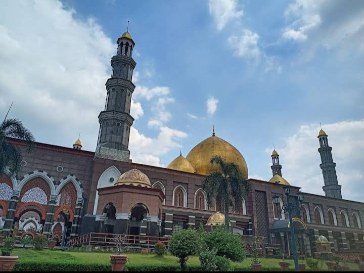
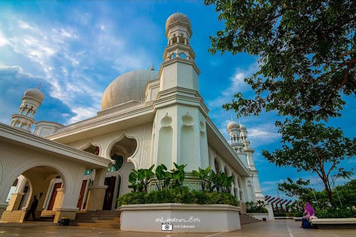
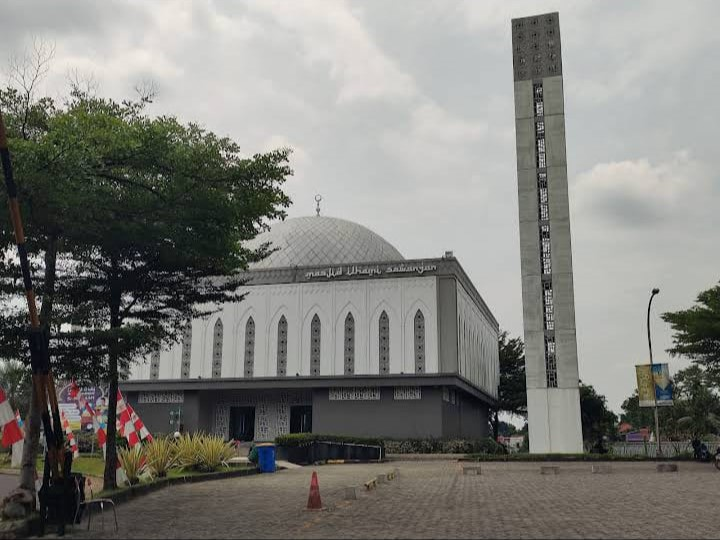

Direktori Data Masjid Kota Depok
Masjid Dian Al-Mahri

ini adalah masjid Dian Al -Mahri didirikan oleh sepasang suami istri yang bernama Maimun Al Rasyid dan Dian Al Mahri. yang sering di kenal masjid kubah mas bertempat di depok.
Masjid Al ikhlash

ini adalah masjid Al Iklash yang beralamat di maharaja depok
Masjid At Thohir

ini adalah masjid At Thohir yang di bangun oleh erik Thohir bertempat di depok dengan tujuan wujud nyata bakti anak kepada orang tua.
Masjid Ash-shiddiq

ini adalah masjid Ash-shiddiq yang bertempat di cikeas depok
Masjid ilhami
